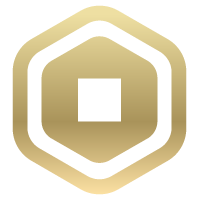

Гонки — это основная механика игры. В зависимости от расы игрока он
получит уникальные пассивные способности и усиления для использования
в бою. В Blox Fruits раса назначается случайным образом при первом присоединениb zигрока. При первом присоединении можно получить следующие расы:.
- Человек (62,5%)
- Риба (12.5%)
- Ангел (12.5%)
- Кролик (12.5%)
Уникальные расы:
- Киборг (можно получить, выполнив Cyborg Puzzle)
- Гуль (можно купить за 100 эктоплазмы и факел адского пламени в Experimic)
Мои гайди для получения:
V2
V3
Получение
- Расу игрока можно изменить
различными способами, перечисленными ниже:
- Покупка изменения расы за 90 в магазине товаров.
- Даём Торту 3000
 , чтобы он перебросил гонку.
Вы гарантированно перебросите другую расу.
(Недоступно в Первом море .)
, чтобы он перебросил гонку.
Вы гарантированно перебросите другую расу.
(Недоступно в Первом море .)
- Во время рождественского события Обновления 13 игрок мог купить переброс гонки за 90конфет у NPC- волшебного эльфа .
- Во время рождественского мероприятия «Обновление 17, часть 1» игрок мог купить переброс гонки за 100 конфет у NPC «Волшебный эльф» .
- Во время Дня святого Валентина вы можете использовать 50 сердец , чтобы изменить свою расу.
- Во время рождественского мероприятия «Обновление 23, часть 1» игрок мог купить переброс гонки за 100 конфет у NPC «Волшебный эльф» .
Обратите внимание, что Гуля и Киборга нельзя получить перечисленными выше способами. Однако, если вы уже
получили их один раз, вы можете получить их снова, поговорив с соответствующими
NPC ( Experimic для Ghoul и секретным NPC для Cyborg).
ПРИМЕЧАНИЕ!!! Чтобы переключиться на Киборга , секретному NPC требуется 2500 для
каждого переключения. Тем не менее, Гуль может свободно включаться и выходить из
режима.
НАЖМИ НА МЕНЯ